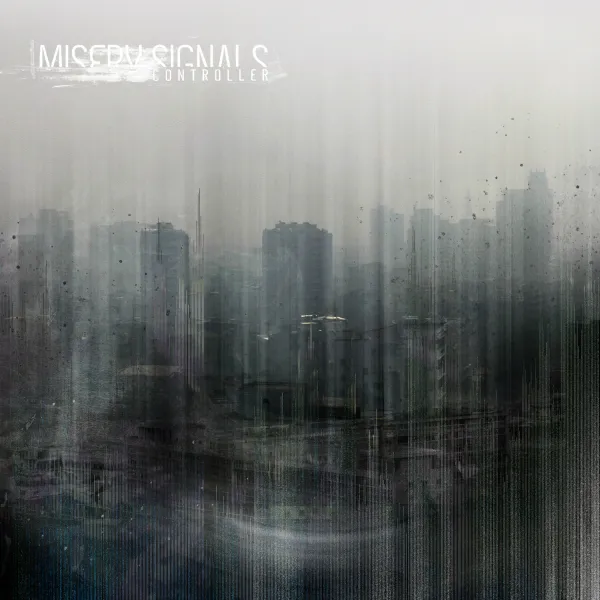
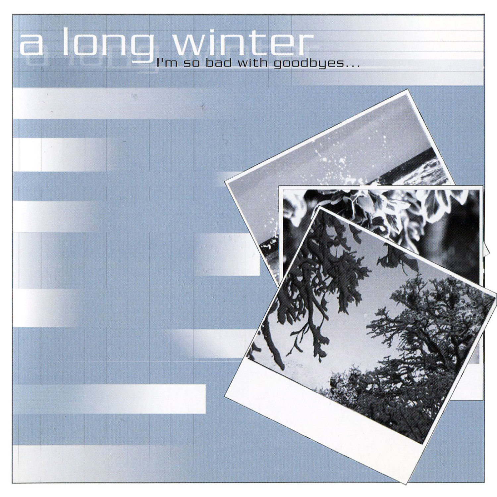
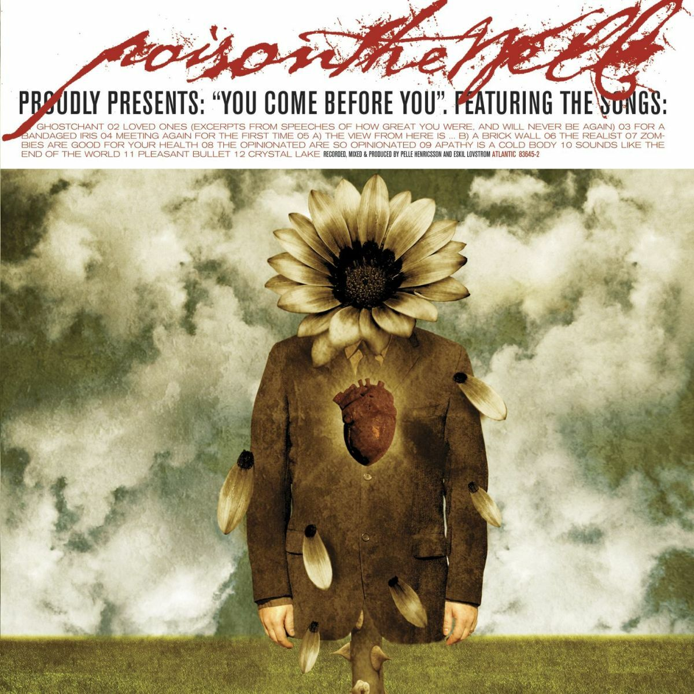
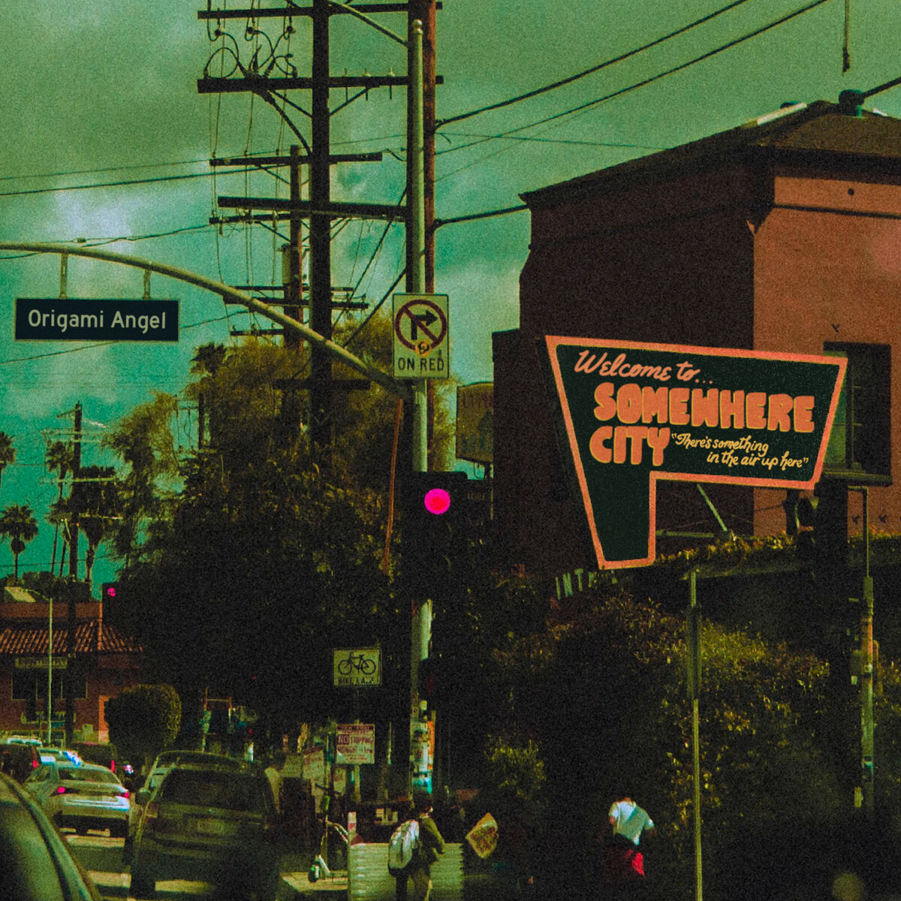
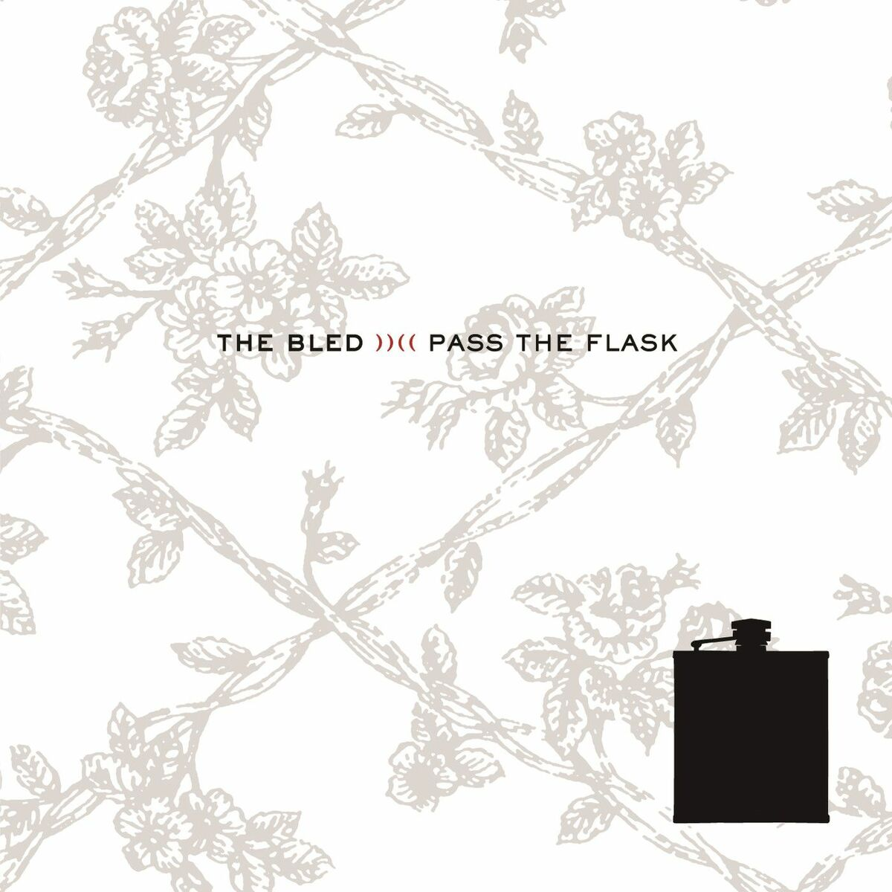

Top Albums :)
These are the rankings for my favorite albums. I mostly listen to metalcore, hardcore, and emo genres, and my favorite genre is melodic metalcore infused with emo.
1. Controller — Misery Signals
One of the albums that really shaped my music taste. It's just so crushing and dynamic at the same time. You wont hear these riffs anywhere else, they're just bursting with apocalyptic character and dread.
If you take one recommendation from this list, let it be this.
2. I'm So Bad With Goodbyes — A Long Winter
An underrated melodic-metalcore emo record that sounds different. It sounds very romantic and angelic, then it can switch up to hard chugs with panic chords.
3. You Come Before You — Poison the Well
An emo masterclass. Bittersweet melodies that fall into place. Its sounds very pleasing and warm, and the metalcore parts are very blistering and groovy.
4. Somewhere City — Origami Angel
This record feels like a friend you've known for a very long time. It's very fun and nostalgic sounding. It's amazing.
5. Pass the Flask — The Bled
Full of plenty addicting riffs. It's very post-hardcore, and chuggy, which makes for a fun listen.